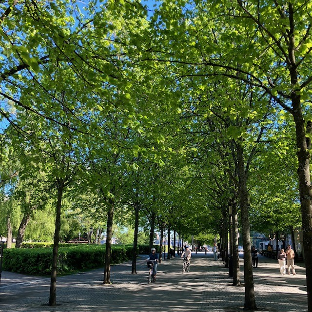
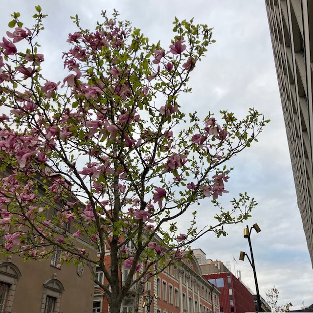

<!DOCTYPE html>
<html>
<head>
    
    <meta http-equiv="content-type" content="text/html; charset=UTF-8" />
    
        <script>
            L_NO_TOUCH = false;
            L_DISABLE_3D = false;
        </script>
    
    <style>html, body {width: 100%;height: 100%;margin: 0;padding: 0;}</style>
    <style>#map {position:absolute;top:0;bottom:0;right:0;left:0;}</style>
    <script src="https://cdn.jsdelivr.net/npm/leaflet@1.9.3/dist/leaflet.js"></script>
    <script src="https://code.jquery.com/jquery-3.7.1.min.js"></script>
    <script src="https://cdn.jsdelivr.net/npm/bootstrap@5.2.2/dist/js/bootstrap.bundle.min.js"></script>
    <script src="https://cdnjs.cloudflare.com/ajax/libs/Leaflet.awesome-markers/2.0.2/leaflet.awesome-markers.js"></script>
    <link rel="stylesheet" href="https://cdn.jsdelivr.net/npm/leaflet@1.9.3/dist/leaflet.css"/>
    <link rel="stylesheet" href="https://cdn.jsdelivr.net/npm/bootstrap@5.2.2/dist/css/bootstrap.min.css"/>
    <link rel="stylesheet" href="https://netdna.bootstrapcdn.com/bootstrap/3.0.0/css/bootstrap-glyphicons.css"/>
    <link rel="stylesheet" href="https://cdn.jsdelivr.net/npm/@fortawesome/fontawesome-free@6.2.0/css/all.min.css"/>
    <link rel="stylesheet" href="https://cdnjs.cloudflare.com/ajax/libs/Leaflet.awesome-markers/2.0.2/leaflet.awesome-markers.css"/>
    <link rel="stylesheet" href="https://cdn.jsdelivr.net/gh/python-visualization/folium/folium/templates/leaflet.awesome.rotate.min.css"/>
    
            <meta name="viewport" content="width=device-width,
                initial-scale=1.0, maximum-scale=1.0, user-scalable=no" />
            <style>
                #map_d94222684de6d327ccd72fdbd56c45b2 {
                    position: relative;
                    width: 100.0%;
                    height: 100.0%;
                    left: 0.0%;
                    top: 0.0%;
                }
                .leaflet-container { font-size: 1rem; }
            </style>
        
    <script src="https://cdnjs.cloudflare.com/ajax/libs/leaflet.markercluster/1.1.0/leaflet.markercluster.js"></script>
    <link rel="stylesheet" href="https://cdnjs.cloudflare.com/ajax/libs/leaflet.markercluster/1.1.0/MarkerCluster.css"/>
    <link rel="stylesheet" href="https://cdnjs.cloudflare.com/ajax/libs/leaflet.markercluster/1.1.0/MarkerCluster.Default.css"/>
</head>
<body>
    
    
<script>
function onLocationFound(e) {
    var radius = e.accuracy / 2;

    var userMarker = L.marker(e.latlng).addTo(window.map)
        .bindPopup("Du är här").openPopup();

    L.circle(e.latlng, radius).addTo(window.map);
}

function onLocationError(e) {
    alert(e.message);
}

window.map.on('locationfound', onLocationFound);
window.map.on('locationerror', onLocationError);
window.map.locate({setView: true, maxZoom: 16});
</script>
    
<script>
document.addEventListener("DOMContentLoaded", function() {
    window.map = window._leaflet_map;
});
</script>
    
            <div class="folium-map" id="map_d94222684de6d327ccd72fdbd56c45b2" ></div>
        
</body>
<script>
    
    
            var map_d94222684de6d327ccd72fdbd56c45b2 = L.map(
                "map_d94222684de6d327ccd72fdbd56c45b2",
                {
                    center: [59.3293, 18.0686],
                    crs: L.CRS.EPSG3857,
                    ...{
  "zoom": 15,
  "zoomControl": true,
  "preferCanvas": false,
}

                }
            );

            

        
    
            var tile_layer_e1a9eeb566b80c3817364af4fdd067e6 = L.tileLayer(
                "https://{s}.basemaps.cartocdn.com/rastertiles/voyager/{z}/{x}/{y}{r}.png",
                {
  "minZoom": 0,
  "maxZoom": 20,
  "maxNativeZoom": 20,
  "noWrap": false,
  "attribution": "CartoDB",
  "subdomains": "abcd",
  "detectRetina": false,
  "tms": false,
  "opacity": 1,
}

            );
        
    
            tile_layer_e1a9eeb566b80c3817364af4fdd067e6.addTo(map_d94222684de6d327ccd72fdbd56c45b2);
        
    
            var marker_cluster_e7e173b0a2c7df3844ae03868a32b491 = L.markerClusterGroup(
                {
}
            );
        
    
            marker_cluster_e7e173b0a2c7df3844ae03868a32b491.addTo(map_d94222684de6d327ccd72fdbd56c45b2);
        
    
            var marker_3f19d1a8012a8bd03db406f85c167d48 = L.marker(
                [59.33210074001757, 18.07150116288134],
                {
}
            ).addTo(map_d94222684de6d327ccd72fdbd56c45b2);
        
    
            var div_icon_ee75ff79743d564ff5940d12620cc362 = L.divIcon({
  "html": "\n        \u003cdiv style=\"background-color: #91D34C; color: white;\n                        border-radius: 50%; width: 28px; height: 28px;\n                        text-align: center; line-height: 28px;\n                        font-weight: bold;\"\u003e1\u003c/div\u003e\n        ",
  "className": "empty",
});
            marker_3f19d1a8012a8bd03db406f85c167d48.setIcon(div_icon_ee75ff79743d564ff5940d12620cc362);
        
    
        var popup_6204287f7ff40057ac42e2f9c5333e78 = L.popup({
  "maxWidth": 320,
});

        
            
                var html_e17050b086d8ea195c0eea6706dce91b = $(`<div id="html_e17050b086d8ea195c0eea6706dce91b" style="width: 100.0%; height: 100.0%;">     <div style="max-height: 500px; width: 280px; overflow-y: auto; padding: 10px;">                  <h2 style='margin-bottom: 10px;'>1. Kungsträdgården, vid dammen</h2>         <h4 style='color: darkgreen; margin-top: 0;'>Prydnadskörsbär, Prunus ’Accolade’</h4>         <div style='font-size: 15px; line-height: 1.6; text-align: justify;'>       <div style="font-family: Arial, sans-serif; font-size: 15px; line-height: 1.6; text-align: left;">      Det är inte varje dag man får promenera med huvudet i fluffiga rosa moln. Varje vår blir det en nyhet i hela landet när körsbärsträden i Kungsträdgården blommar. Stockholmare och turister vallfärdar för att fotografera denna blomsterfägring av vackert rosa, halvfyllda blommor i slutet av april.      <p>Körsbärsträden planterades 1998, i dubbla rader på båda sidorna av dammen. Träden är en hybrid mellan bergkörsbär (Prunus sargentii) och vårkörsbär (Prunus subhirtella). Den har en smalare krona i ungdomen men blir bredare med tiden, för att till slut få en nästan flat kronuppbyggnad, där grenarna hänger nedåt.</p>      <p>Andra platser i staden där du kan se prydnadskörsbär är på Luma torg i Hammarby Sjöstad.</p>      </div>      </div>         <div style="margin-top: 10px; display: flex; justify-content: center; gap: 8px; flex-wrap: wrap;">             <audio id="audio1" src="1.m4a"></audio>             <a href="javascript:document.getElementsByClassName('leaflet-marker-icon')[15].click();"               style="background-color: #91D34C; color: white; padding: 8px 12px;                       text-decoration: none; border-radius: 6px; display: inline-block;">               ← Föregående             </a>             <a href="javascript:document.getElementById('audio1').play();"               style="background-color: #FFA500; color: white; padding: 8px 12px;                       text-decoration: none; border-radius: 6px; display: inline-block;">               Lyssna             </a>             <a href="javascript:document.getElementsByClassName('leaflet-marker-icon')[1].click();"               style="background-color: #91D34C; color: white; padding: 8px 12px;                       text-decoration: none; border-radius: 6px; display: inline-block;">               Nästa →             </a>         </div>     </div>     </div>`)[0];
                popup_6204287f7ff40057ac42e2f9c5333e78.setContent(html_e17050b086d8ea195c0eea6706dce91b);
            
        

        marker_3f19d1a8012a8bd03db406f85c167d48.bindPopup(popup_6204287f7ff40057ac42e2f9c5333e78)
        ;

        
    
    
                marker_3f19d1a8012a8bd03db406f85c167d48.setIcon(div_icon_ee75ff79743d564ff5940d12620cc362);
            
    
            var marker_c8c17ced7bc840922fa92aa661623038 = L.marker(
                [59.33158633411901, 18.07190885862338],
                {
}
            ).addTo(map_d94222684de6d327ccd72fdbd56c45b2);
        
    
            var div_icon_53341a37c4f3dd76ca6c107515e61dbf = L.divIcon({
  "html": "\n        \u003cdiv style=\"background-color: #91D34C; color: white;\n                        border-radius: 50%; width: 28px; height: 28px;\n                        text-align: center; line-height: 28px;\n                        font-weight: bold;\"\u003e2\u003c/div\u003e\n        ",
  "className": "empty",
});
            marker_c8c17ced7bc840922fa92aa661623038.setIcon(div_icon_53341a37c4f3dd76ca6c107515e61dbf);
        
    
        var popup_20cb08207a28a999206a2533c5b3b2cf = L.popup({
  "maxWidth": 320,
});

        
            
                var html_d2338841af0f6a9ff97c3ff6a31713fc = $(`<div id="html_d2338841af0f6a9ff97c3ff6a31713fc" style="width: 100.0%; height: 100.0%;">     <div style="max-height: 500px; width: 280px; overflow-y: auto; padding: 10px;">                  <h2 style='margin-bottom: 10px;'>2. Kungsträdgården, vid alléerna</h2>         <h4 style='color: darkgreen; margin-top: 0;'>Skogslind, Tilia X cordata ’Rancho’, selektion av skogslind</h4>         <div style='font-size: 15px; line-height: 1.6; text-align: justify;'>       <div style="font-family: Arial, sans-serif; font-size: 15px; line-height: 1.6; text-align: left;">      Lind är det vanligaste trädet på innerstadens gator. Framför allt på grund av esplanadsystemets utbyggnad under slutet av 1800-talet, men även för att det är lättskött och klarar sig ganska bra i staden. I Kungsträdgården står lindarna i två, dubbelradiga alléer på var sida om parken – Jussi Björlings allé och Birgit Nilssons allé. Träden som står där idag planterades 1996 och 2003–2006.      <p>Benämningen cordata syftar till bladens hjärtform. Linden kan under sommaren avge så kallad honungsdagg – ett sekret som utsöndras av löss som suger växtsaft ur bladen.</p>      <p>Andra platser i staden där du kan se skogslind är på trottoaren vid Hammarby allé.</p>      </div>      </div>         <div style="margin-top: 10px; display: flex; justify-content: center; gap: 8px; flex-wrap: wrap;">             <audio id="audio2" src="2.m4a"></audio>             <a href="javascript:document.getElementsByClassName('leaflet-marker-icon')[0].click();"               style="background-color: #91D34C; color: white; padding: 8px 12px;                       text-decoration: none; border-radius: 6px; display: inline-block;">               ← Föregående             </a>             <a href="javascript:document.getElementById('audio2').play();"               style="background-color: #FFA500; color: white; padding: 8px 12px;                       text-decoration: none; border-radius: 6px; display: inline-block;">               Lyssna             </a>             <a href="javascript:document.getElementsByClassName('leaflet-marker-icon')[2].click();"               style="background-color: #91D34C; color: white; padding: 8px 12px;                       text-decoration: none; border-radius: 6px; display: inline-block;">               Nästa →             </a>         </div>     </div>     </div>`)[0];
                popup_20cb08207a28a999206a2533c5b3b2cf.setContent(html_d2338841af0f6a9ff97c3ff6a31713fc);
            
        

        marker_c8c17ced7bc840922fa92aa661623038.bindPopup(popup_20cb08207a28a999206a2533c5b3b2cf)
        ;

        
    
    
                marker_c8c17ced7bc840922fa92aa661623038.setIcon(div_icon_53341a37c4f3dd76ca6c107515e61dbf);
            
    
            var marker_3f6bed03523ed2041f192da214c8ed2a = L.marker(
                [59.330464464454856, 18.071962502799966],
                {
}
            ).addTo(map_d94222684de6d327ccd72fdbd56c45b2);
        
    
            var div_icon_419ef8bc5d7c90d266caaf57d6e6c1de = L.divIcon({
  "html": "\n        \u003cdiv style=\"background-color: #91D34C; color: white;\n                        border-radius: 50%; width: 28px; height: 28px;\n                        text-align: center; line-height: 28px;\n                        font-weight: bold;\"\u003e3\u003c/div\u003e\n        ",
  "className": "empty",
});
            marker_3f6bed03523ed2041f192da214c8ed2a.setIcon(div_icon_419ef8bc5d7c90d266caaf57d6e6c1de);
        
    
        var popup_5ad1a22e9e924eda81bfe9cfd5ba9a04 = L.popup({
  "maxWidth": 320,
});

        
            
                var html_92e441d17d0309eb3049dbc474892dc8 = $(`<div id="html_92e441d17d0309eb3049dbc474892dc8" style="width: 100.0%; height: 100.0%;">     <div style="max-height: 500px; width: 280px; overflow-y: auto; padding: 10px;">                  <h2 style='margin-bottom: 10px;'>3. Kungsträdgården, vid Tehuset</h2>         <h4 style='color: darkgreen; margin-top: 0;'>Skogsalm, Ulmus gla bra</h4>         <div style='font-size: 15px; line-height: 1.6; text-align: justify;'>       <div style="font-family: Arial, sans-serif; font-size: 15px; line-height: 1.6; text-align: left;">      Almarna är planterade i slutet av 1800-talet som en så kallad boskée, en formellt planterad grupp av träd, ofta i rader eller geometriska mönster, som skapar ett avgränsat rum i en park. Idag står Tehuset i den cirkelformade planteringen. Almen var ett av de vanligaste stadsträden i både park- och gatumiljöer innan den allvarliga typen av almsjukan gjorde sitt intåg.      <p>Almen växer i en vasform, med en tidigt uppsplittrad krona och stora, mörkgröna, asymmetriska, sågade blad. Höstfärgen är gyllengul. De blommar på bar kvist under vårvintern med små blommor.</p>      <p>1971 planerade politikerna i Stockholm att bygga en tunnelbaneuppgång till Kungsträdgårdens tunnelbana precis där almarna står. Det blev stora protester som slutade med att almarna fick stå kvar.</p>      </div>      </div>         <div style="margin-top: 10px; display: flex; justify-content: center; gap: 8px; flex-wrap: wrap;">             <audio id="audio3" src="3.m4a"></audio>             <a href="javascript:document.getElementsByClassName('leaflet-marker-icon')[1].click();"               style="background-color: #91D34C; color: white; padding: 8px 12px;                       text-decoration: none; border-radius: 6px; display: inline-block;">               ← Föregående             </a>             <a href="javascript:document.getElementById('audio3').play();"               style="background-color: #FFA500; color: white; padding: 8px 12px;                       text-decoration: none; border-radius: 6px; display: inline-block;">               Lyssna             </a>             <a href="javascript:document.getElementsByClassName('leaflet-marker-icon')[3].click();"               style="background-color: #91D34C; color: white; padding: 8px 12px;                       text-decoration: none; border-radius: 6px; display: inline-block;">               Nästa →             </a>         </div>     </div>     </div>`)[0];
                popup_5ad1a22e9e924eda81bfe9cfd5ba9a04.setContent(html_92e441d17d0309eb3049dbc474892dc8);
            
        

        marker_3f6bed03523ed2041f192da214c8ed2a.bindPopup(popup_5ad1a22e9e924eda81bfe9cfd5ba9a04)
        ;

        
    
    
                marker_3f6bed03523ed2041f192da214c8ed2a.setIcon(div_icon_419ef8bc5d7c90d266caaf57d6e6c1de);
            
    
            var marker_5953ed85a807f7256a842e400ce7f0bf = L.marker(
                [59.33044257393739, 18.069258836239964],
                {
}
            ).addTo(map_d94222684de6d327ccd72fdbd56c45b2);
        
    
            var div_icon_115fa830912afe2d6cabe99786b87624 = L.divIcon({
  "html": "\n        \u003cdiv style=\"background-color: #91D34C; color: white;\n                        border-radius: 50%; width: 28px; height: 28px;\n                        text-align: center; line-height: 28px;\n                        font-weight: bold;\"\u003e4\u003c/div\u003e\n        ",
  "className": "empty",
});
            marker_5953ed85a807f7256a842e400ce7f0bf.setIcon(div_icon_115fa830912afe2d6cabe99786b87624);
        
    
        var popup_7ede4f0d0ed10b28f6a9ac1614e86724 = L.popup({
  "maxWidth": 320,
});

        
            
                var html_94bcbcd01c1a59c83003b10929f0f7cc = $(`<div id="html_94bcbcd01c1a59c83003b10929f0f7cc" style="width: 100.0%; height: 100.0%;">     <div style="max-height: 500px; width: 280px; overflow-y: auto; padding: 10px;">                  <h2 style='margin-bottom: 10px;'>4. Jakobsgatan vid Hamburger Börs</h2>         <h4 style='color: darkgreen; margin-top: 0;'>Hybridkörsbär, Prunus X gondouinii ’Schnee’</h4>         <div style='font-size: 15px; line-height: 1.6; text-align: justify;'>       <div style="font-family: Arial, sans-serif; font-size: 15px; line-height: 1.6; text-align: left;">      Det här är ett mindre träd med en först konisk, senare brett rundad och slutligen något tillplattad krona. Det har en mycket rik blomning och blommar på bar kvist i början av maj. Blommorna är rent vita och enkla till något fyllda. Höstfärgerna är sprakande, i gult till orangerött. Träden planterades under 1990-talet.      </div>      </div>         <div style="margin-top: 10px; display: flex; justify-content: center; gap: 8px; flex-wrap: wrap;">             <audio id="audio4" src="4.m4a"></audio>             <a href="javascript:document.getElementsByClassName('leaflet-marker-icon')[2].click();"               style="background-color: #91D34C; color: white; padding: 8px 12px;                       text-decoration: none; border-radius: 6px; display: inline-block;">               ← Föregående             </a>             <a href="javascript:document.getElementById('audio4').play();"               style="background-color: #FFA500; color: white; padding: 8px 12px;                       text-decoration: none; border-radius: 6px; display: inline-block;">               Lyssna             </a>             <a href="javascript:document.getElementsByClassName('leaflet-marker-icon')[4].click();"               style="background-color: #91D34C; color: white; padding: 8px 12px;                       text-decoration: none; border-radius: 6px; display: inline-block;">               Nästa →             </a>         </div>     </div>     </div>`)[0];
                popup_7ede4f0d0ed10b28f6a9ac1614e86724.setContent(html_94bcbcd01c1a59c83003b10929f0f7cc);
            
        

        marker_5953ed85a807f7256a842e400ce7f0bf.bindPopup(popup_7ede4f0d0ed10b28f6a9ac1614e86724)
        ;

        
    
    
                marker_5953ed85a807f7256a842e400ce7f0bf.setIcon(div_icon_115fa830912afe2d6cabe99786b87624);
            
    
            var marker_a3f972eee81fc82569c6b16c8b4f5f79 = L.marker(
                [59.33065600579097, 18.068572190779687],
                {
}
            ).addTo(map_d94222684de6d327ccd72fdbd56c45b2);
        
    
            var div_icon_3dfef3e98623aadb4b049bb81b6568d1 = L.divIcon({
  "html": "\n        \u003cdiv style=\"background-color: #91D34C; color: white;\n                        border-radius: 50%; width: 28px; height: 28px;\n                        text-align: center; line-height: 28px;\n                        font-weight: bold;\"\u003e5\u003c/div\u003e\n        ",
  "className": "empty",
});
            marker_a3f972eee81fc82569c6b16c8b4f5f79.setIcon(div_icon_3dfef3e98623aadb4b049bb81b6568d1);
        
    
        var popup_d4e586ff9eca78953839654cdbbd48ed = L.popup({
  "maxWidth": 320,
});

        
            
                var html_f300ce292ba417ff3755c93ec4d1db76 = $(`<div id="html_f300ce292ba417ff3755c93ec4d1db76" style="width: 100.0%; height: 100.0%;">     <div style="max-height: 500px; width: 280px; overflow-y: auto; padding: 10px;">                  <h2 style='margin-bottom: 10px;'>5. Regeringsgatan, mittemot Gallerian</h2>         <h4 style='color: darkgreen; margin-top: 0;'>Mannaask, Fraxinus ornus</h4>         <div style='font-size: 15px; line-height: 1.6; text-align: justify;'>       <div style="font-family: Arial, sans-serif; font-size: 15px; line-height: 1.6; text-align: left;">      I de upphöjda betongkaren på Regeringsgatan planterades mannaaskar i mitten av 1970-talet. Detta lilla och långsamt växande träd har en god förmåga att klara av knappa förhållanden och är friskt grön i färgen. Kronan är samlad och har en rund till oval form. Höstfärgen är gul. I juni blommar träden generöst med vita plymer. Den kåda som utvinns ur träden i odlingar i Sydeuropa används som ett laxermedel, och skiljer sig från den manna som omnämns i andra sammanhang.      <p>Andra platser i staden där du kan se mannaask är på Brunkebergstorg vid Riksbanken och på Mäster Samuelsgatan.</p>      </div>      </div>         <div style="margin-top: 10px; display: flex; justify-content: center; gap: 8px; flex-wrap: wrap;">             <audio id="audio5" src="5.m4a"></audio>             <a href="javascript:document.getElementsByClassName('leaflet-marker-icon')[3].click();"               style="background-color: #91D34C; color: white; padding: 8px 12px;                       text-decoration: none; border-radius: 6px; display: inline-block;">               ← Föregående             </a>             <a href="javascript:document.getElementById('audio5').play();"               style="background-color: #FFA500; color: white; padding: 8px 12px;                       text-decoration: none; border-radius: 6px; display: inline-block;">               Lyssna             </a>             <a href="javascript:document.getElementsByClassName('leaflet-marker-icon')[5].click();"               style="background-color: #91D34C; color: white; padding: 8px 12px;                       text-decoration: none; border-radius: 6px; display: inline-block;">               Nästa →             </a>         </div>     </div>     </div>`)[0];
                popup_d4e586ff9eca78953839654cdbbd48ed.setContent(html_f300ce292ba417ff3755c93ec4d1db76);
            
        

        marker_a3f972eee81fc82569c6b16c8b4f5f79.bindPopup(popup_d4e586ff9eca78953839654cdbbd48ed)
        ;

        
    
    
                marker_a3f972eee81fc82569c6b16c8b4f5f79.setIcon(div_icon_3dfef3e98623aadb4b049bb81b6568d1);
            
    
            var marker_4a541db62b83568a8eecc61ecd6e347b = L.marker(
                [59.330171677731, 18.067939189495995],
                {
}
            ).addTo(map_d94222684de6d327ccd72fdbd56c45b2);
        
    
            var div_icon_c2a51be6b8cf8621b53f3b3026fe1029 = L.divIcon({
  "html": "\n        \u003cdiv style=\"background-color: #91D34C; color: white;\n                        border-radius: 50%; width: 28px; height: 28px;\n                        text-align: center; line-height: 28px;\n                        font-weight: bold;\"\u003e6\u003c/div\u003e\n        ",
  "className": "empty",
});
            marker_4a541db62b83568a8eecc61ecd6e347b.setIcon(div_icon_c2a51be6b8cf8621b53f3b3026fe1029);
        
    
        var popup_f88e8be8cc064f4ef021b8e594705c85 = L.popup({
  "maxWidth": 320,
});

        
            
                var html_abc2e41bdad61015d58c31f70dc6b278 = $(`<div id="html_abc2e41bdad61015d58c31f70dc6b278" style="width: 100.0%; height: 100.0%;">     <div style="max-height: 500px; width: 280px; overflow-y: auto; padding: 10px;">                  <h2 style='margin-bottom: 10px;'>6. Jakobsgatan, utanför Gallerian</h2>         <h4 style='color: darkgreen; margin-top: 0;'>Kärrek, Quercus palustris</h4>         <div style='font-size: 15px; line-height: 1.6; text-align: justify;'>       <div style="font-family: Arial, sans-serif; font-size: 15px; line-height: 1.6; text-align: left;">      Unga kärrekar har en spikrak, genomgående stam och en konisk kronform. Med tiden breder kronan ut sig och de nedersta grenarna får ett hängande växtsätt. Bladen är djupflikiga och klargrönt glänsande, och får vackra höstfärger. Träden producerar rikligt med ekollon.      <p>Kärrekarna på Jakobsgatan planterades under slutet av 1990-talet.</p>      <p>Andra platser i staden där du kan hitta kärrek är på Eastmanvägen och Olivecronas väg i Sabbatsbergsområdet, där kärrekarna växer så det knakar. Du kan också se kärrekar i Järnvägsparken, bredvid Tegelbacken. De träden har flyttats från Malmtorgsgatan och står i en grupp om fem träd och en solitärt. I Kista dominerar kärreken bland gatuträden.</p>      </div>      </div>         <div style="margin-top: 10px; display: flex; justify-content: center; gap: 8px; flex-wrap: wrap;">             <audio id="audio6" src="6.m4a"></audio>             <a href="javascript:document.getElementsByClassName('leaflet-marker-icon')[4].click();"               style="background-color: #91D34C; color: white; padding: 8px 12px;                       text-decoration: none; border-radius: 6px; display: inline-block;">               ← Föregående             </a>             <a href="javascript:document.getElementById('audio6').play();"               style="background-color: #FFA500; color: white; padding: 8px 12px;                       text-decoration: none; border-radius: 6px; display: inline-block;">               Lyssna             </a>             <a href="javascript:document.getElementsByClassName('leaflet-marker-icon')[6].click();"               style="background-color: #91D34C; color: white; padding: 8px 12px;                       text-decoration: none; border-radius: 6px; display: inline-block;">               Nästa →             </a>         </div>     </div>     </div>`)[0];
                popup_f88e8be8cc064f4ef021b8e594705c85.setContent(html_abc2e41bdad61015d58c31f70dc6b278);
            
        

        marker_4a541db62b83568a8eecc61ecd6e347b.bindPopup(popup_f88e8be8cc064f4ef021b8e594705c85)
        ;

        
    
    
                marker_4a541db62b83568a8eecc61ecd6e347b.setIcon(div_icon_c2a51be6b8cf8621b53f3b3026fe1029);
            
    
            var marker_a62efdbd8cf21c1e5a9ae25d5e8e4aae = L.marker(
                [59.33005948775691, 18.067386654418506],
                {
}
            ).addTo(map_d94222684de6d327ccd72fdbd56c45b2);
        
    
            var div_icon_19d7e6d9601ed3b6533aad165a2941c7 = L.divIcon({
  "html": "\n        \u003cdiv style=\"background-color: #91D34C; color: white;\n                        border-radius: 50%; width: 28px; height: 28px;\n                        text-align: center; line-height: 28px;\n                        font-weight: bold;\"\u003e7\u003c/div\u003e\n        ",
  "className": "empty",
});
            marker_a62efdbd8cf21c1e5a9ae25d5e8e4aae.setIcon(div_icon_19d7e6d9601ed3b6533aad165a2941c7);
        
    
        var popup_9ceffae9e7e879b0b3546a4701fe7d85 = L.popup({
  "maxWidth": 320,
});

        
            
                var html_90497682852454c230e4b2063eec412f = $(`<div id="html_90497682852454c230e4b2063eec412f" style="width: 100.0%; height: 100.0%;">     <div style="max-height: 500px; width: 280px; overflow-y: auto; padding: 10px;">                  <h2 style='margin-bottom: 10px;'>7. Jakobsgatan, korsningen Malmtorgsgatan</h2>         <h4 style='color: darkgreen; margin-top: 0;'>Papegojbuske, Parrotia persica</h4>         <div style='font-size: 15px; line-height: 1.6; text-align: justify;'>       <div style="font-family: Arial, sans-serif; font-size: 15px; line-height: 1.6; text-align: left;">      Papegojbusken är trots sitt namn egentligen ett mindre träd, som kan bli upp till tio meter högt. Dessa träd får en fantastisk höstfärg i orange, rött och lila. Finast färger får trädet på en varm växtplats och efter en varm sommar.      <p>Träden planterades 2019.</p>      <p>Andra platser i staden där du kan se papegojbuske är på Medevigatan och Luntmakargatan.</p>      </div>      </div>         <div style="margin-top: 10px; display: flex; justify-content: center; gap: 8px; flex-wrap: wrap;">             <audio id="audio7" src="7.m4a"></audio>             <a href="javascript:document.getElementsByClassName('leaflet-marker-icon')[5].click();"               style="background-color: #91D34C; color: white; padding: 8px 12px;                       text-decoration: none; border-radius: 6px; display: inline-block;">               ← Föregående             </a>             <a href="javascript:document.getElementById('audio7').play();"               style="background-color: #FFA500; color: white; padding: 8px 12px;                       text-decoration: none; border-radius: 6px; display: inline-block;">               Lyssna             </a>             <a href="javascript:document.getElementsByClassName('leaflet-marker-icon')[7].click();"               style="background-color: #91D34C; color: white; padding: 8px 12px;                       text-decoration: none; border-radius: 6px; display: inline-block;">               Nästa →             </a>         </div>     </div>     </div>`)[0];
                popup_9ceffae9e7e879b0b3546a4701fe7d85.setContent(html_90497682852454c230e4b2063eec412f);
            
        

        marker_a62efdbd8cf21c1e5a9ae25d5e8e4aae.bindPopup(popup_9ceffae9e7e879b0b3546a4701fe7d85)
        ;

        
    
    
                marker_a62efdbd8cf21c1e5a9ae25d5e8e4aae.setIcon(div_icon_19d7e6d9601ed3b6533aad165a2941c7);
            
    
            var marker_65f4abb583a6acefd2a14c799e13becd = L.marker(
                [59.33027839467252, 18.067145255623878],
                {
}
            ).addTo(map_d94222684de6d327ccd72fdbd56c45b2);
        
    
            var div_icon_c7e1b25835d3b8256d14fd49799d9569 = L.divIcon({
  "html": "\n        \u003cdiv style=\"background-color: #91D34C; color: white;\n                        border-radius: 50%; width: 28px; height: 28px;\n                        text-align: center; line-height: 28px;\n                        font-weight: bold;\"\u003e8\u003c/div\u003e\n        ",
  "className": "empty",
});
            marker_65f4abb583a6acefd2a14c799e13becd.setIcon(div_icon_c7e1b25835d3b8256d14fd49799d9569);
        
    
        var popup_48c62ea6e1e3374929f0659d3060ae5e = L.popup({
  "maxWidth": 320,
});

        
            
                var html_0b2010e735400e32b08066cd1cc59cad = $(`<div id="html_0b2010e735400e32b08066cd1cc59cad" style="width: 100.0%; height: 100.0%;">     <div style="max-height: 500px; width: 280px; overflow-y: auto; padding: 10px;">                  <h2 style='margin-bottom: 10px;'>8. Malmtorgsgatans östra sida</h2>         <h4 style='color: darkgreen; margin-top: 0;'>Magnolia ’Galaxy’</h4>         <div style='font-size: 15px; line-height: 1.6; text-align: justify;'>Denna magnolia blommar med stora rosaröda blommor.</div>         <div style="margin-top: 10px; display: flex; justify-content: center; gap: 8px; flex-wrap: wrap;">             <audio id="audio8" src="8.m4a"></audio>             <a href="javascript:document.getElementsByClassName('leaflet-marker-icon')[6].click();"               style="background-color: #91D34C; color: white; padding: 8px 12px;                       text-decoration: none; border-radius: 6px; display: inline-block;">               ← Föregående             </a>             <a href="javascript:document.getElementById('audio8').play();"               style="background-color: #FFA500; color: white; padding: 8px 12px;                       text-decoration: none; border-radius: 6px; display: inline-block;">               Lyssna             </a>             <a href="javascript:document.getElementsByClassName('leaflet-marker-icon')[8].click();"               style="background-color: #91D34C; color: white; padding: 8px 12px;                       text-decoration: none; border-radius: 6px; display: inline-block;">               Nästa →             </a>         </div>     </div>     </div>`)[0];
                popup_48c62ea6e1e3374929f0659d3060ae5e.setContent(html_0b2010e735400e32b08066cd1cc59cad);
            
        

        marker_65f4abb583a6acefd2a14c799e13becd.bindPopup(popup_48c62ea6e1e3374929f0659d3060ae5e)
        ;

        
    
    
                marker_65f4abb583a6acefd2a14c799e13becd.setIcon(div_icon_c7e1b25835d3b8256d14fd49799d9569);
            
    
            var marker_9979d1a588fc82bae323dedbcf195195 = L.marker(
                [59.331404574038345, 18.06636320377362],
                {
}
            ).addTo(map_d94222684de6d327ccd72fdbd56c45b2);
        
    
            var div_icon_b2a6da162d8c0ec7a797028b741b07f9 = L.divIcon({
  "html": "\n        \u003cdiv style=\"background-color: #91D34C; color: white;\n                        border-radius: 50%; width: 28px; height: 28px;\n                        text-align: center; line-height: 28px;\n                        font-weight: bold;\"\u003e9\u003c/div\u003e\n        ",
  "className": "empty",
});
            marker_9979d1a588fc82bae323dedbcf195195.setIcon(div_icon_b2a6da162d8c0ec7a797028b741b07f9);
        
    
        var popup_b46f0879724641ea7794c0a78eaef0e5 = L.popup({
  "maxWidth": 320,
});

        
            
                var html_b1e0c5ef0d23959553d71ca3cb4906c2 = $(`<div id="html_b1e0c5ef0d23959553d71ca3cb4906c2" style="width: 100.0%; height: 100.0%;">     <div style="max-height: 500px; width: 280px; overflow-y: auto; padding: 10px;">                  <h2 style='margin-bottom: 10px;'>9. Brunkebergstorg</h2>         <h4 style='color: darkgreen; margin-top: 0;'>Magnolia</h4>         <div style='font-size: 15px; line-height: 1.6; text-align: justify;'>       <div style="font-family: Arial, sans-serif; font-size: 15px; line-height: 1.6; text-align: left;">      År 2017 rustade staden upp Brunkebergstorg i samarbete med fastighetsägare för att skapa en bättre mötesplats mitt i city. Platsen är belagd med granithällar och i de upphöjda terrazzocirklarna planterades en blandning av magnolior med olika karaktär.      <p>Wada’s Memory är en hybrid mellan japansk magnolia (Magnolia kobus) och pilbladig magnolia (Magnolia salicifolia). Den blommar med stora, helvita blommor och har blomblad som hänger nedåt.</p>      <p>Rosenmagnolia ’Heaven scent’ är en kulturhybrid mellan yunanmagnolia (Magnolia denudata) och liljemagnolian (Magnolia liliflora). Den blommar med doftande, rosaröda blommor.</p>      <p>Biondi är en av de tidigast blommande magnoliorna. Den får vita blommor med rosa inslag.</p>      </div>      </div>         <div style="margin-top: 10px; display: flex; justify-content: center; gap: 8px; flex-wrap: wrap;">             <audio id="audio9" src="9.m4a"></audio>             <a href="javascript:document.getElementsByClassName('leaflet-marker-icon')[7].click();"               style="background-color: #91D34C; color: white; padding: 8px 12px;                       text-decoration: none; border-radius: 6px; display: inline-block;">               ← Föregående             </a>             <a href="javascript:document.getElementById('audio9').play();"               style="background-color: #FFA500; color: white; padding: 8px 12px;                       text-decoration: none; border-radius: 6px; display: inline-block;">               Lyssna             </a>             <a href="javascript:document.getElementsByClassName('leaflet-marker-icon')[9].click();"               style="background-color: #91D34C; color: white; padding: 8px 12px;                       text-decoration: none; border-radius: 6px; display: inline-block;">               Nästa →             </a>         </div>     </div>     </div>`)[0];
                popup_b46f0879724641ea7794c0a78eaef0e5.setContent(html_b1e0c5ef0d23959553d71ca3cb4906c2);
            
        

        marker_9979d1a588fc82bae323dedbcf195195.bindPopup(popup_b46f0879724641ea7794c0a78eaef0e5)
        ;

        
    
    
                marker_9979d1a588fc82bae323dedbcf195195.setIcon(div_icon_b2a6da162d8c0ec7a797028b741b07f9);
            
    
            var marker_49a3fd8e2cca002b6853a266a3126b70 = L.marker(
                [59.33169296794744, 18.06512278247012],
                {
}
            ).addTo(map_d94222684de6d327ccd72fdbd56c45b2);
        
    
            var div_icon_40ca183cb8265962b58dd0e2f1d8d754 = L.divIcon({
  "html": "\n        \u003cdiv style=\"background-color: #91D34C; color: white;\n                        border-radius: 50%; width: 28px; height: 28px;\n                        text-align: center; line-height: 28px;\n                        font-weight: bold;\"\u003e10\u003c/div\u003e\n        ",
  "className": "empty",
});
            marker_49a3fd8e2cca002b6853a266a3126b70.setIcon(div_icon_40ca183cb8265962b58dd0e2f1d8d754);
        
    
        var popup_cdf584060cf72ad15e293fa84d4b8dc9 = L.popup({
  "maxWidth": 320,
});

        
            
                var html_0e47529bcb1f730876b5de16a87526f4 = $(`<div id="html_0e47529bcb1f730876b5de16a87526f4" style="width: 100.0%; height: 100.0%;">     <div style="max-height: 500px; width: 280px; overflow-y: auto; padding: 10px;">                  <h2 style='margin-bottom: 10px;'>10. Benny Fredrikssons torg</h2>         <h4 style='color: darkgreen; margin-top: 0;'>Turkisk trädhassel, Corylus colurna</h4>         <div style='font-size: 15px; line-height: 1.6; text-align: justify;'>       <div style="font-family: Arial, sans-serif; font-size: 15px; line-height: 1.6; text-align: left;">      I den upphöjda rundeln mellan Kulturhuset och Riksbanken planterades på 1990-talet en turkisk trädhassel. Trädet har äggrunda, svagt flikade, ljusgröna blad och en tydligt genomgående stam med flagig bark. Under vintern pryds det av dekorativa hanhängen och små röda honblommor. Nötterna är ganska stora och sitter samlade i stora, fransiga buketter.      <p>Du kan också hitta turkisk trädhassel på Sankt Göransgatan. Förskolor i det området har rapporterat att uppspelta ekorrar plockar hasselnötter av träden.</p>      </div>      </div>         <div style="margin-top: 10px; display: flex; justify-content: center; gap: 8px; flex-wrap: wrap;">             <audio id="audio10" src="10.m4a"></audio>             <a href="javascript:document.getElementsByClassName('leaflet-marker-icon')[8].click();"               style="background-color: #91D34C; color: white; padding: 8px 12px;                       text-decoration: none; border-radius: 6px; display: inline-block;">               ← Föregående             </a>             <a href="javascript:document.getElementById('audio10').play();"               style="background-color: #FFA500; color: white; padding: 8px 12px;                       text-decoration: none; border-radius: 6px; display: inline-block;">               Lyssna             </a>             <a href="javascript:document.getElementsByClassName('leaflet-marker-icon')[10].click();"               style="background-color: #91D34C; color: white; padding: 8px 12px;                       text-decoration: none; border-radius: 6px; display: inline-block;">               Nästa →             </a>         </div>     </div>     </div>`)[0];
                popup_cdf584060cf72ad15e293fa84d4b8dc9.setContent(html_0e47529bcb1f730876b5de16a87526f4);
            
        

        marker_49a3fd8e2cca002b6853a266a3126b70.bindPopup(popup_cdf584060cf72ad15e293fa84d4b8dc9)
        ;

        
    
    
                marker_49a3fd8e2cca002b6853a266a3126b70.setIcon(div_icon_40ca183cb8265962b58dd0e2f1d8d754);
            
    
            var marker_71b680f71c930d60a489f4b015d89341 = L.marker(
                [59.331985008098364, 18.061241672472264],
                {
}
            ).addTo(map_d94222684de6d327ccd72fdbd56c45b2);
        
    
            var div_icon_143a1a55702ad68f92177f620a4bc49c = L.divIcon({
  "html": "\n        \u003cdiv style=\"background-color: #91D34C; color: white;\n                        border-radius: 50%; width: 28px; height: 28px;\n                        text-align: center; line-height: 28px;\n                        font-weight: bold;\"\u003e11\u003c/div\u003e\n        ",
  "className": "empty",
});
            marker_71b680f71c930d60a489f4b015d89341.setIcon(div_icon_143a1a55702ad68f92177f620a4bc49c);
        
    
        var popup_476abd1a09370b042f767b89b2abe4a2 = L.popup({
  "maxWidth": 320,
});

        
            
                var html_a6cb331eff1f302f93f2641305285fe5 = $(`<div id="html_a6cb331eff1f302f93f2641305285fe5" style="width: 100.0%; height: 100.0%;">     <div style="max-height: 500px; width: 280px; overflow-y: auto; padding: 10px;">                  <h2 style='margin-bottom: 10px;'>11. Klarabergsviadukten, utanför Åhléns</h2>         <h4 style='color: darkgreen; margin-top: 0;'>Kinesträd, Koelreuteria paniculata</h4>         <div style='font-size: 15px; line-height: 1.6; text-align: justify;'>       <div style="font-family: Arial, sans-serif; font-size: 15px; line-height: 1.6; text-align: left;">      Kinesträden på Klarabergsviadukten är några av de träd som staden får flest frågor kring. Det är många förbipasserande som nyfiket undrar vad det är för slags träd.      <p>Tidigare stod det lindar på platsen men som inte trivdes alls. De mycket ledsna träden såg ut som att de hade gått en rond med en torktumlare. Det är inte särskilt förvånande då platsen inte gav lindarna några vidare förutsättningar. Det är en varm plats i staden och träden hade ytterst begränsat med rotutrymme i underjordiska lådor, ovanpå tunnelbanans tak.</p>      <p>Kinesträden hamnade här i omgångar efter att tätskiktet till tunnelbanan renoverades i mitten av 2010-talet. Det är ett mindre träd, som kan bli fem till åtta meter högt. En utmaning har varit att hitta fina exemplar som stamträd i plantskolan. Dels för att träden är fröförökade och dels för att de verkar föredra att växa som en buske.</p>      <p>Bladen är vanligen parbladiga och cirka 30 centimeter långa med bronsfärgat lövutspring, och blir sedan mörkgröna. Höstfärgen är brungul till orange. De blommar sent, under juli–augusti, med gula plymer. Träden får frukter under september som dekorativt sitter kvar i träden som kinesiska lyktor. Trädet är ljuskrävande och gillar varma platser.</p>      <p>Andra platser i staden där du kan hitta kinesträd är på Magnus Ladulåsgatan och snart även vid Slussen. Vill man resa lite längre bort finns de på Friisgatan i Malmö och i Dresden i Tyskland.</p>      </div>      </div>         <div style="margin-top: 10px; display: flex; justify-content: center; gap: 8px; flex-wrap: wrap;">             <audio id="audio11" src="11.m4a"></audio>             <a href="javascript:document.getElementsByClassName('leaflet-marker-icon')[9].click();"               style="background-color: #91D34C; color: white; padding: 8px 12px;                       text-decoration: none; border-radius: 6px; display: inline-block;">               ← Föregående             </a>             <a href="javascript:document.getElementById('audio11').play();"               style="background-color: #FFA500; color: white; padding: 8px 12px;                       text-decoration: none; border-radius: 6px; display: inline-block;">               Lyssna             </a>             <a href="javascript:document.getElementsByClassName('leaflet-marker-icon')[11].click();"               style="background-color: #91D34C; color: white; padding: 8px 12px;                       text-decoration: none; border-radius: 6px; display: inline-block;">               Nästa →             </a>         </div>     </div>     </div>`)[0];
                popup_476abd1a09370b042f767b89b2abe4a2.setContent(html_a6cb331eff1f302f93f2641305285fe5);
            
        

        marker_71b680f71c930d60a489f4b015d89341.bindPopup(popup_476abd1a09370b042f767b89b2abe4a2)
        ;

        
    
    
                marker_71b680f71c930d60a489f4b015d89341.setIcon(div_icon_143a1a55702ad68f92177f620a4bc49c);
            
    
            var marker_53ebbc1b6f2f73e972dc98618d1131dd = L.marker(
                [59.331454241393075, 18.0599490761384],
                {
}
            ).addTo(map_d94222684de6d327ccd72fdbd56c45b2);
        
    
            var div_icon_3c63475fb6c5ddb278b09e5a377a20e3 = L.divIcon({
  "html": "\n        \u003cdiv style=\"background-color: #91D34C; color: white;\n                        border-radius: 50%; width: 28px; height: 28px;\n                        text-align: center; line-height: 28px;\n                        font-weight: bold;\"\u003e12\u003c/div\u003e\n        ",
  "className": "empty",
});
            marker_53ebbc1b6f2f73e972dc98618d1131dd.setIcon(div_icon_3c63475fb6c5ddb278b09e5a377a20e3);
        
    
        var popup_560c93f5beb6965f442da700977c98e7 = L.popup({
  "maxWidth": 320,
});

        
            
                var html_e8c952e28ea05b727d7e0f80487f55cd = $(`<div id="html_e8c952e28ea05b727d7e0f80487f55cd" style="width: 100.0%; height: 100.0%;">     <div style="max-height: 500px; width: 280px; overflow-y: auto; padding: 10px;">                  <h2 style='margin-bottom: 10px;'>12. Klara västra kyrkogata</h2>         <h4 style='color: darkgreen; margin-top: 0;'>Korstörne, Gleditsia triacanthos f. inermis</h4>         <div style='font-size: 15px; line-height: 1.6; text-align: justify;'>       <div style="font-family: Arial, sans-serif; font-size: 15px; line-height: 1.6; text-align: left;">      Utformningen på platsen flörtar lite med miniparken Paley park i New York där en dunge ljusgrön korstörne står insprängd mellan skyskraporna.      <p>Korstörnet är en värmegynnad och ljusälskande pionjärart och ett av de vanligaste gatuträden i östra USA. De beskrivs ibland som ”torgträd”, det vill säga träd som får blad lite senare på året. Träden skymmer därför inte vårsolen, samtidigt som ett skirt lövverk senare ger en behaglig skugga under högsommaren.</p>      <p>Under hösten får träden fina, gula höstfärger och dekorativa ärtskidor som kan sitta kvar när träden är avlövade. ”Inermis” är latin för obeväpnad, vilket innebär att de här träden inte har de spetsiga och vassa utskott, så kallade tornar, som skyddar mot betande djur och som torde vara varje arborists mardröm.</p>      </div>      </div>         <div style="margin-top: 10px; display: flex; justify-content: center; gap: 8px; flex-wrap: wrap;">             <audio id="audio12" src="12.m4a"></audio>             <a href="javascript:document.getElementsByClassName('leaflet-marker-icon')[10].click();"               style="background-color: #91D34C; color: white; padding: 8px 12px;                       text-decoration: none; border-radius: 6px; display: inline-block;">               ← Föregående             </a>             <a href="javascript:document.getElementById('audio12').play();"               style="background-color: #FFA500; color: white; padding: 8px 12px;                       text-decoration: none; border-radius: 6px; display: inline-block;">               Lyssna             </a>             <a href="javascript:document.getElementsByClassName('leaflet-marker-icon')[12].click();"               style="background-color: #91D34C; color: white; padding: 8px 12px;                       text-decoration: none; border-radius: 6px; display: inline-block;">               Nästa →             </a>         </div>     </div>     </div>`)[0];
                popup_560c93f5beb6965f442da700977c98e7.setContent(html_e8c952e28ea05b727d7e0f80487f55cd);
            
        

        marker_53ebbc1b6f2f73e972dc98618d1131dd.bindPopup(popup_560c93f5beb6965f442da700977c98e7)
        ;

        
    
    
                marker_53ebbc1b6f2f73e972dc98618d1131dd.setIcon(div_icon_3c63475fb6c5ddb278b09e5a377a20e3);
            
    
            var marker_cdd13efc61527f7f93317bfc6cd3ef90 = L.marker(
                [59.33063625281176, 18.059503681850124],
                {
}
            ).addTo(map_d94222684de6d327ccd72fdbd56c45b2);
        
    
            var div_icon_97da1d8e9df1fc0d31c6fbd7fc16a774 = L.divIcon({
  "html": "\n        \u003cdiv style=\"background-color: #91D34C; color: white;\n                        border-radius: 50%; width: 28px; height: 28px;\n                        text-align: center; line-height: 28px;\n                        font-weight: bold;\"\u003e13\u003c/div\u003e\n        ",
  "className": "empty",
});
            marker_cdd13efc61527f7f93317bfc6cd3ef90.setIcon(div_icon_97da1d8e9df1fc0d31c6fbd7fc16a774);
        
    
        var popup_4dcc260ef1fe4e647bbb20aa80019b69 = L.popup({
  "maxWidth": 320,
});

        
            
                var html_8fa253c1d672629e6f15f5ef808255b6 = $(`<div id="html_8fa253c1d672629e6f15f5ef808255b6" style="width: 100.0%; height: 100.0%;">     <div style="max-height: 500px; width: 280px; overflow-y: auto; padding: 10px;">                  <h2 style='margin-bottom: 10px;'>13. Vasagatan, mittemot Centralstationen</h2>         <h4 style='color: darkgreen; margin-top: 0;'>Japansk zelkova, Zelkova serrata</h4>         <div style='font-size: 15px; line-height: 1.6; text-align: justify;'>       <div style="font-family: Arial, sans-serif; font-size: 15px; line-height: 1.6; text-align: left;">      Vasagatan rustades upp 2018–2021 och fick då bredare trottoarer, cykelbanor och nya trädplanteringar.      <p>Zelkovan tillhör almfamiljen och har stora likheter med denna. Växtsättet är brett vasformigt. Bladen är mörkgröna, utdragna med sågade kanter. Höstfärgerna är roströda. De har en slät stam som med tiden spricker upp i dekorativa plattor.</p>      <p>Andra platser i staden där du kan hitta zelkova är vid korsningen Rådmansgatan och Birger Jarlsgatan.</p>      </div>      </div>         <div style="margin-top: 10px; display: flex; justify-content: center; gap: 8px; flex-wrap: wrap;">             <audio id="audio13" src="13.m4a"></audio>             <a href="javascript:document.getElementsByClassName('leaflet-marker-icon')[11].click();"               style="background-color: #91D34C; color: white; padding: 8px 12px;                       text-decoration: none; border-radius: 6px; display: inline-block;">               ← Föregående             </a>             <a href="javascript:document.getElementById('audio13').play();"               style="background-color: #FFA500; color: white; padding: 8px 12px;                       text-decoration: none; border-radius: 6px; display: inline-block;">               Lyssna             </a>             <a href="javascript:document.getElementsByClassName('leaflet-marker-icon')[13].click();"               style="background-color: #91D34C; color: white; padding: 8px 12px;                       text-decoration: none; border-radius: 6px; display: inline-block;">               Nästa →             </a>         </div>     </div>     </div>`)[0];
                popup_4dcc260ef1fe4e647bbb20aa80019b69.setContent(html_8fa253c1d672629e6f15f5ef808255b6);
            
        

        marker_cdd13efc61527f7f93317bfc6cd3ef90.bindPopup(popup_4dcc260ef1fe4e647bbb20aa80019b69)
        ;

        
    
    
                marker_cdd13efc61527f7f93317bfc6cd3ef90.setIcon(div_icon_97da1d8e9df1fc0d31c6fbd7fc16a774);
            
    
            var marker_399689ec2aa9b6e371d4b390bf1ac5c5 = L.marker(
                [59.33202738155008, 18.058277626533595],
                {
}
            ).addTo(map_d94222684de6d327ccd72fdbd56c45b2);
        
    
            var div_icon_bfee6ec00d6ed004b951fdbdb06b586f = L.divIcon({
  "html": "\n        \u003cdiv style=\"background-color: #91D34C; color: white;\n                        border-radius: 50%; width: 28px; height: 28px;\n                        text-align: center; line-height: 28px;\n                        font-weight: bold;\"\u003e14\u003c/div\u003e\n        ",
  "className": "empty",
});
            marker_399689ec2aa9b6e371d4b390bf1ac5c5.setIcon(div_icon_bfee6ec00d6ed004b951fdbdb06b586f);
        
    
        var popup_60605aeebff8abbbc45d798db4ae5b89 = L.popup({
  "maxWidth": 320,
});

        
            
                var html_d4f3086183f34ece08764966b3f4808e = $(`<div id="html_d4f3086183f34ece08764966b3f4808e" style="width: 100.0%; height: 100.0%;">     <div style="max-height: 500px; width: 280px; overflow-y: auto; padding: 10px;">                  <h2 style='margin-bottom: 10px;'>14. Vasagatan, korsningen Mäster Samuelsgatan</h2>         <h4 style='color: darkgreen; margin-top: 0;'>Ambraträd, Liquidambar styraciflua ’Worplesdon’</h4>         <div style='font-size: 15px; line-height: 1.6; text-align: justify;'>       <div style="font-family: Arial, sans-serif; font-size: 15px; line-height: 1.6; text-align: left;">      Trädet kommer ursprungligen från USA, men sorten är en engelsk selektion. I början växer trädet som en pelare för att med tiden få en mer oval form. De har spännande, stjärnformiga blad med utdragna spetsar och djupa flikar. Höstfärgerna kan bli slående i aprikos och orange. Båda orden i namnet syftar till den kåda som kan användas som tuggummi, vilket även har gett trädet dess amerikanska namn, ”Sweetgum”.      </div>      </div>         <div style="margin-top: 10px; display: flex; justify-content: center; gap: 8px; flex-wrap: wrap;">             <audio id="audio14" src="14.m4a"></audio>             <a href="javascript:document.getElementsByClassName('leaflet-marker-icon')[12].click();"               style="background-color: #91D34C; color: white; padding: 8px 12px;                       text-decoration: none; border-radius: 6px; display: inline-block;">               ← Föregående             </a>             <a href="javascript:document.getElementById('audio14').play();"               style="background-color: #FFA500; color: white; padding: 8px 12px;                       text-decoration: none; border-radius: 6px; display: inline-block;">               Lyssna             </a>             <a href="javascript:document.getElementsByClassName('leaflet-marker-icon')[14].click();"               style="background-color: #91D34C; color: white; padding: 8px 12px;                       text-decoration: none; border-radius: 6px; display: inline-block;">               Nästa →             </a>         </div>     </div>     </div>`)[0];
                popup_60605aeebff8abbbc45d798db4ae5b89.setContent(html_d4f3086183f34ece08764966b3f4808e);
            
        

        marker_399689ec2aa9b6e371d4b390bf1ac5c5.bindPopup(popup_60605aeebff8abbbc45d798db4ae5b89)
        ;

        
    
    
                marker_399689ec2aa9b6e371d4b390bf1ac5c5.setIcon(div_icon_bfee6ec00d6ed004b951fdbdb06b586f);
            
    
            var marker_a96e96a78850b790daa16f109320e9a9 = L.marker(
                [59.33347646357579, 18.057035321554384],
                {
}
            ).addTo(map_d94222684de6d327ccd72fdbd56c45b2);
        
    
            var div_icon_61f937cbdf97a8333e26b858ca8af17d = L.divIcon({
  "html": "\n        \u003cdiv style=\"background-color: #91D34C; color: white;\n                        border-radius: 50%; width: 28px; height: 28px;\n                        text-align: center; line-height: 28px;\n                        font-weight: bold;\"\u003e15\u003c/div\u003e\n        ",
  "className": "empty",
});
            marker_a96e96a78850b790daa16f109320e9a9.setIcon(div_icon_61f937cbdf97a8333e26b858ca8af17d);
        
    
        var popup_5cd32b2c5cf27bd5bd216936703f1458 = L.popup({
  "maxWidth": 320,
});

        
            
                var html_85ce6c25d254227225b600dbca625a2e = $(`<div id="html_85ce6c25d254227225b600dbca625a2e" style="width: 100.0%; height: 100.0%;">     <div style="max-height: 500px; width: 280px; overflow-y: auto; padding: 10px;">                  <h2 style='margin-bottom: 10px;'>15. Vasagatan, korsningen Gamla Brogata</h2>         <h4 style='color: darkgreen; margin-top: 0;'>Rödask, Fraxinus pensylvanica ’Summit’</h4>         <div style='font-size: 15px; line-height: 1.6; text-align: justify;'>       <div style="font-family: Arial, sans-serif; font-size: 15px; line-height: 1.6; text-align: left;">      Det här trädet är en amerikansk selektion av rödask, med ovalt till rundat växtsätt. Trädet har stora och vackert glänsande, gröna blad med en smörgul höstfärg. Trädet är värmegynnat, torktåligt och tål stadsklimatet.      <p>Andra platser i staden där du kan hitta rödask är på Fredriksdalstorget, där den står i kombination med vitask (Fraxinus americana ’Autumn Purple’), och på Torsgatan.</p>      </div>      </div>         <div style="margin-top: 10px; display: flex; justify-content: center; gap: 8px; flex-wrap: wrap;">             <audio id="audio15" src="15.m4a"></audio>             <a href="javascript:document.getElementsByClassName('leaflet-marker-icon')[13].click();"               style="background-color: #91D34C; color: white; padding: 8px 12px;                       text-decoration: none; border-radius: 6px; display: inline-block;">               ← Föregående             </a>             <a href="javascript:document.getElementById('audio15').play();"               style="background-color: #FFA500; color: white; padding: 8px 12px;                       text-decoration: none; border-radius: 6px; display: inline-block;">               Lyssna             </a>             <a href="javascript:document.getElementsByClassName('leaflet-marker-icon')[15].click();"               style="background-color: #91D34C; color: white; padding: 8px 12px;                       text-decoration: none; border-radius: 6px; display: inline-block;">               Nästa →             </a>         </div>     </div>     </div>`)[0];
                popup_5cd32b2c5cf27bd5bd216936703f1458.setContent(html_85ce6c25d254227225b600dbca625a2e);
            
        

        marker_a96e96a78850b790daa16f109320e9a9.bindPopup(popup_5cd32b2c5cf27bd5bd216936703f1458)
        ;

        
    
    
                marker_a96e96a78850b790daa16f109320e9a9.setIcon(div_icon_61f937cbdf97a8333e26b858ca8af17d);
            
    
            var marker_0e668ce0fbfdb081e74b8d789e24c96e = L.marker(
                [59.33415188448287, 18.05644586312134],
                {
}
            ).addTo(map_d94222684de6d327ccd72fdbd56c45b2);
        
    
            var div_icon_58311345ac7c660d84b39263361c366a = L.divIcon({
  "html": "\n        \u003cdiv style=\"background-color: #91D34C; color: white;\n                        border-radius: 50%; width: 28px; height: 28px;\n                        text-align: center; line-height: 28px;\n                        font-weight: bold;\"\u003e16\u003c/div\u003e\n        ",
  "className": "empty",
});
            marker_0e668ce0fbfdb081e74b8d789e24c96e.setIcon(div_icon_58311345ac7c660d84b39263361c366a);
        
    
        var popup_3d561a4c702c583eb620e1127b9ac707 = L.popup({
  "maxWidth": 320,
});

        
            
                var html_7156ee96ddd46d5c83ea37e1dc420859 = $(`<div id="html_7156ee96ddd46d5c83ea37e1dc420859" style="width: 100.0%; height: 100.0%;">     <div style="max-height: 500px; width: 280px; overflow-y: auto; padding: 10px;">                  <h2 style='margin-bottom: 10px;'>16. Vasagatan, korsningen Kungsgatan</h2>         <h4 style='color: darkgreen; margin-top: 0;'>Berlineral, Alnus X spaethii</h4>         <div style='font-size: 15px; line-height: 1.6; text-align: justify;'>       <div style="font-family: Arial, sans-serif; font-size: 15px; line-height: 1.6; text-align: left;">      I naturen står alar ofta på platser där vattentillgången kan ändras mycket över året, till exempel stränder. Det gör att den är väl anpassad till det hårda klimat som innerstaden innebär. Den visar god tillväxt i växtbäddar uppbyggda med makadam, biokol och kompost. Den här alen är en hybrid mellan japansk al (Alnus japonica) och storbladig al (Alnus subcordata). Berlineralen har en rak, genomgående stam och ett friskt, mörkgrönt bladverk. Tyvärr får den inga höstfärger, utan bladen förblir gröna till dess att de faller av.      <p>Andra platser i staden där du kan se berlineral är på Torsgatan och på Sockenvägen vid Sockenplan.</p>      </div>      </div>         <div style="margin-top: 10px; display: flex; justify-content: center; gap: 8px; flex-wrap: wrap;">             <audio id="audio16" src="16.m4a"></audio>             <a href="javascript:document.getElementsByClassName('leaflet-marker-icon')[14].click();"               style="background-color: #91D34C; color: white; padding: 8px 12px;                       text-decoration: none; border-radius: 6px; display: inline-block;">               ← Föregående             </a>             <a href="javascript:document.getElementById('audio16').play();"               style="background-color: #FFA500; color: white; padding: 8px 12px;                       text-decoration: none; border-radius: 6px; display: inline-block;">               Lyssna             </a>             <a href="javascript:document.getElementsByClassName('leaflet-marker-icon')[0].click();"               style="background-color: #91D34C; color: white; padding: 8px 12px;                       text-decoration: none; border-radius: 6px; display: inline-block;">               Nästa →             </a>         </div>     </div>     </div>`)[0];
                popup_3d561a4c702c583eb620e1127b9ac707.setContent(html_7156ee96ddd46d5c83ea37e1dc420859);
            
        

        marker_0e668ce0fbfdb081e74b8d789e24c96e.bindPopup(popup_3d561a4c702c583eb620e1127b9ac707)
        ;

        
    
    
                marker_0e668ce0fbfdb081e74b8d789e24c96e.setIcon(div_icon_58311345ac7c660d84b39263361c366a);
            
    
            var marker_a5b287618bfbb5c5ffd0d19bf40ede84 = L.marker(
                [59.33210074001757, 18.07150116288134],
                {
}
            ).addTo(map_d94222684de6d327ccd72fdbd56c45b2);
        
    
            var icon_faff68a8bcd114ea5506dd38b3460657 = L.AwesomeMarkers.icon(
                {
  "markerColor": "blue",
  "iconColor": "white",
  "icon": "info-circle",
  "prefix": "fa",
  "extraClasses": "fa-rotate-0",
}
            );
        
    
        var popup_8cd00db519a578b95b139cfeda39272c = L.popup({
  "maxWidth": "100%",
});

        
            
                var html_c46c44adb10f9026088e49c3ee40d904 = $(`<div id="html_c46c44adb10f9026088e49c3ee40d904" style="width: 100.0%; height: 100.0%;">         <b>Trädpromenaden: från Kungsträdgården till Vasagatan</b><br>         Promenaden är cirka 1,8 kilometer lång och tar ungefär 25 minuter att gå i lugn takt.         Du kan följa hela sträckan eller bara besöka enstaka träd längs vägen.     </div>`)[0];
                popup_8cd00db519a578b95b139cfeda39272c.setContent(html_c46c44adb10f9026088e49c3ee40d904);
            
        

        marker_a5b287618bfbb5c5ffd0d19bf40ede84.bindPopup(popup_8cd00db519a578b95b139cfeda39272c)
        ;

        
    
    
                marker_a5b287618bfbb5c5ffd0d19bf40ede84.setIcon(icon_faff68a8bcd114ea5506dd38b3460657);
            
    
            var marker_32625ccb2b818f54c7eb76ecaf23975a = L.marker(
                [59.33415188448287, 18.05644586312134],
                {
}
            ).addTo(map_d94222684de6d327ccd72fdbd56c45b2);
        
    
            var icon_c0890846b29fdb5595b19574837b6260 = L.AwesomeMarkers.icon(
                {
  "markerColor": "red",
  "iconColor": "white",
  "icon": "flag-checkered",
  "prefix": "fa",
  "extraClasses": "fa-rotate-0",
}
            );
        
    
        var popup_41cbbb0d4815e0c13c9b67ca4d1f8fa0 = L.popup({
  "maxWidth": "100%",
});

        
            
                var html_c7b3e8ca9cf387f20c7bddd8eb5e45bc = $(`<div id="html_c7b3e8ca9cf387f20c7bddd8eb5e45bc" style="width: 100.0%; height: 100.0%;">Slut: Vasagatan, korsningen Kungsgatan</div>`)[0];
                popup_41cbbb0d4815e0c13c9b67ca4d1f8fa0.setContent(html_c7b3e8ca9cf387f20c7bddd8eb5e45bc);
            
        

        marker_32625ccb2b818f54c7eb76ecaf23975a.bindPopup(popup_41cbbb0d4815e0c13c9b67ca4d1f8fa0)
        ;

        
    
    
                marker_32625ccb2b818f54c7eb76ecaf23975a.setIcon(icon_c0890846b29fdb5595b19574837b6260);
            
</script>
</html>
